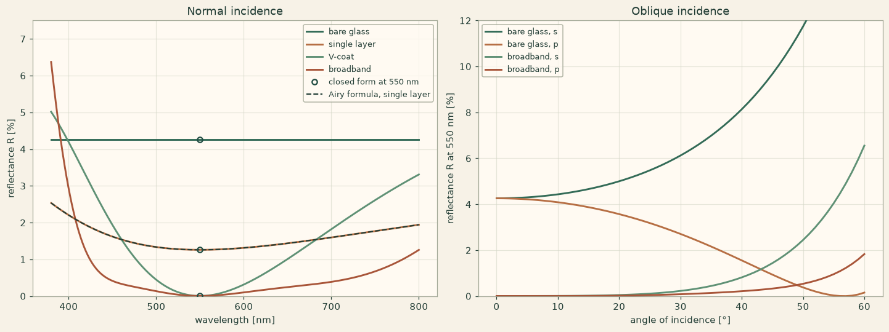

Docs › Examples › Antireflection coatings with one, two and three layers
Wave optics · 1D
Antireflection coatings with one, two and three layers
Quarter- and half-wave films of magnesium fluoride, alumina and zirconia that suppress the 4 % reflection of bare glass.
Run locally with OneSimulation. The example downloads are free. Running them requires an activated runtime. Runtime Alpha 0.2.1a8 · CPython 3.13 on macOS (Apple Silicon), Ubuntu 22.04 (x86-64), and Windows x64. Installation and activation · View pilot plans. Scope of the reference checks.


What it computes
OneSimulation solves the plane-wave Maxwell problem in the layered medium with its coherent optical stack, which cascades the scattering of every film and returns reflected, transmitted and absorbed power over wavelength, angle and polarisation. A single-layer, a two-layer V-coat and a three-layer broadband coating are compared from 380 to 800 nm and from 0 to 60 degrees.
What it checks
At 550 nm all four designs match the quarter-wave admittance formulas to 1e-17 (4.258 % bare, 1.260 % single layer, 0.0045 % V-coat and broadband), the single-layer spectrum matches the Airy formula to 5e-17, and the mean visible reflectance falls from 4.26 % to 1.35 %, 0.50 % and 0.13 %.
The notebook
The complete notebook, cell by cell. Run it to produce the figures and the comparison printout.
Light passing from air (\(n_0\)) into glass (\(n_s\)) loses the fraction \(R=\big((n_s-n_0)/(n_s+n_0)\big)^2\) to reflection, about 4.3 % for crown glass. Thin dielectric films on the glass surface create additional reflections that interfere destructively with the first one. Three classic designs for a design wavelength \(\lambda_0=550\) nm (layers listed from the air side):
| design | layers | optical thickness |
|---|---|---|
| single layer | MgF\(_2\) (\(n=1.38\)) | \(\lambda_0/4\) |
| V-coat | MgF\(_2\) (1.38) / Al\(_2\)O\(_3\) (1.69) | \(\lambda_0/4\) / \(\lambda_0/4\) |
| broadband (quarter-half-quarter) | MgF\(_2\) (1.38) / ZrO\(_2\) (2.05) / Al\(_2\)O\(_3\) (1.69) | \(\lambda_0/4\) / \(\lambda_0/2\) / \(\lambda_0/4\) |
The substrate is glass with \(n_s=1.52\). CoherentOpticalStack treats every film as a scattering element for the forward and backward plane wave and cascades them from air to glass; it returns the reflected, transmitted and absorbed power for any wavelength, angle and polarisation.
Reference (H. A. Macleod, Thin-Film Optical Filters, 5th ed., CRC Press 2018, ch. 4; E. Hecht, Optics, 5th ed., §9.7). At \(\lambda_0\) a quarter-wave film turns the admittance \(Y\) behind it into \(n^2/Y\) and a half-wave film leaves it unchanged, so
where \(n_1\) is the outer and \(n_2\) the inner quarter-wave film; the V-coat vanishes for \(n_2/n_1=\sqrt{n_s/n_0}\). Over the whole spectrum, a single film of phase thickness \(\delta=2\pi n_1d_1/\lambda\) reflects according to Airy's formula
import numpy as np
from onesim.materials.electromagnetic import CoherentOpticalStack, OpticalLayer
from onesim.visualization import plots, theme
theme.set()Model
design, n_air, n_glass = 550e-9, 1.0, 1.52
n_mgf2, n_al2o3, n_zro2 = 1.38, 1.69, 2.05
quarter = lambda index: OpticalLayer(thickness=design / (4 * index), index=index)
coatings = {
"bare glass": CoherentOpticalStack(layers=()),
"single layer": CoherentOpticalStack(layers=(quarter(n_mgf2),)),
"V-coat": CoherentOpticalStack(layers=(quarter(n_mgf2), quarter(n_al2o3))),
"broadband": CoherentOpticalStack(
layers=(
quarter(n_mgf2),
OpticalLayer(thickness=design / (2 * n_zro2), index=n_zro2),
quarter(n_al2o3),
)
),
}
wavelength = np.linspace(380e-9, 800e-9, 841)
spectra = {
name: stack(wavelength, 1.0, n_air, n_glass, polarization="s").reflected
for name, stack in coatings.items()
}Comparison with the closed forms
The reflectance of every design at 550 nm, the Airy formula against the single-layer spectrum, and the mean reflectance over the visible band 450 to 650 nm.
two_layer = (
(n_air * n_al2o3**2 - n_glass * n_mgf2**2)
/ (n_air * n_al2o3**2 + n_glass * n_mgf2**2)
) ** 2
closed_form = {
"bare glass": ((n_glass - n_air) / (n_glass + n_air)) ** 2,
"single layer": ((n_air * n_glass - n_mgf2**2) / (n_air * n_glass + n_mgf2**2))
** 2,
"V-coat": two_layer,
"broadband": two_layer,
}
visible = (wavelength >= 450e-9) & (wavelength <= 650e-9)
print(
"design R(550 nm) computed closed form deviation mean R 450-650 nm"
)
for name, stack in coatings.items():
computed = stack(design, 1.0, n_air, n_glass, polarization="s").reflected
print(
f"{name:14s} {100 * computed:17.4f} % {100 * closed_form[name]:11.4f} % {computed - closed_form[name]:+11.1e} "
f"{100 * spectra[name][visible].mean():12.3f} %"
)
r01, r1s = (n_air - n_mgf2) / (n_air + n_mgf2), (n_mgf2 - n_glass) / (n_mgf2 + n_glass)
airy = (
np.abs(
(r01 + r1s * np.exp(-1j * np.pi * design / wavelength))
/ (1 + r01 * r1s * np.exp(-1j * np.pi * design / wavelength))
)
** 2
)
print(
f"single layer against the Airy formula over 380-800 nm: largest difference {np.abs(spectra['single layer'] - airy).max():.1e}"
)
print(
f"index ratio of the ideal V-coat: n2/n1 = sqrt(ns/n0) = {np.sqrt(n_glass / n_air):.4f}, chosen {n_al2o3 / n_mgf2:.4f}"
)Oblique incidence
Camera lenses see light up to large angles. The broadband coating is evaluated for both polarisations from 0 to 60 degrees at 550 nm.
angles = np.linspace(0, 60, 61)
oblique = {
f"{name}, {polarization}": coatings[name](
design, np.cos(np.radians(angles)), n_air, n_glass, polarization=polarization
).reflected
for name in ("bare glass", "broadband")
for polarization in ("s", "p")
}Figure
fig = plots.figure(1, 2, size=(13, 4.8))
plots.line(
1e9 * wavelength,
{name: 100 * values for name, values in spectra.items()},
reference={"Airy formula, single layer": (1e9 * wavelength, 100 * airy)},
points={
"closed form at 550 nm": (
[550] * 3,
[
100 * closed_form[name]
for name in ("bare glass", "single layer", "V-coat")
],
)
},
ylimits=(0, 7.5),
xlabel="wavelength [nm]",
ylabel="reflectance R [%]",
title="Normal incidence",
legend="upper right",
ax=fig[0],
)
plots.line(
angles,
{name: 100 * values for name, values in oblique.items()},
ylimits=(0, 12),
xlabel="angle of incidence [°]",
ylabel="reflectance R at 550 nm [%]",
title="Oblique incidence",
legend="upper left",
ax=fig[1],
)
plots.show()Going further
Make the films dispersive with index=lambda wavelength: ... (for example a Cauchy law) to see the minimum of the V-coat shift with real materials, or add a fourth layer and push the mean visible reflectance below 0.2 %.